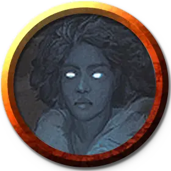

Селеста
Celeste
Средняя Нежить, любое мировоззрение, именной НИП

Класс Доспеха 11
Хиты 45 (10к8)
Скорость 0 футов, летая 40 футов (парит)
| мод | спас | ||
|---|---|---|---|
| СИЛ | 7 | −2 | −2 |
| ЛОВ | 13 | +1 | +1 |
| ТЕЛ | 10 | +0 | +0 |
| мод | спас | ||
|---|---|---|---|
| ИНТ | 10 | +0 | +0 |
| МДР | 12 | +1 | +1 |
| ХАР | 17 | +3 | +3 |
Сопротивление урону звук, кислота, огонь, электричество; дробящий, колющий, рубящий от немагических атак
Иммунитет к урону некротическая энергия, холод, яд
Иммунитет к состояниям сбивание с ног, паралич, очарование, отравление, опутанность, окаменение, истощение, испуг, захват
Чувства тёмное зрение 60 футов, пассивное Восприятие 11
Языки все, известные при жизни
Опасность 4 (1100 опыта)
Бонус мастерства +2
Особенности
Эфирное зрение. Зрение привидения простирается на 60 футов на Эфирный План, когда оно находится на Материальном Плане, и наоборот.
Бестелесное перемещение. Привидение может перемещаться сквозь других существ и предметы, как если бы они были труднопроходимой местностью. Оно получает урон силовым полем 5 (1к10), если оканчивает ход внутри предмета.
Действия
Иссушающее касание. Рукопашная атака оружием: +5 к попаданию, досягаемость 5 футов, одна цель. Попадание: Урон некротической энергией 17 (4к6 + 3).
Эфирность. Привидение входит на Эфирный План с Материального Плана, или наоборот. Оно видимо на Материальном Плане, пока находится в Пограничном Эфире, и наоборот, хотя не может воздействовать на то, что находится на другом плане, и становиться целью эффектов, происходящих на другом плане.
Ужасный облик. Все существа, находящиеся в пределах 60 футов от привидения, не являющиеся нежитью, и способные видеть его, должны преуспеть в спасброске Мудрости Сл 13, иначе станут испуганными на 1 минуту. Если цель проваливает спасбросок на 5 и более единиц, она также стареет на 1к4 × 10 лет. Испуганная цель может повторять этот спасбросок в конце каждого своего хода, оканчивая испуганное состояние на себе при успехе. Если цель успешно совершила спасбросок или действие эффекта закончилось, она получает иммунитет к Ужасному облику этого привидения на следующие 24 часа. Эффект старения можно отменить заклинанием высшее восстановление, но только если оно будет наложено в течение 24 часов после воздействия.
Одержимость (перезарядка 6). Один гуманоид, видимый привидением в пределах 5 футов от себя, должен преуспеть в спасброске Харизмы Сл 13, иначе станет одержимым привидением; после этого привидение исчезает, а цель становится недееспособной и теряет контроль над своим телом. Теперь привидение контролирует это тело, но цель не теряет сознание. Привидение не может быть целью атак, заклинаний и прочих эффектов, кроме тех, что изгоняют нежить, и оно сохраняет своё мировоззрение, Интеллект, Мудрость, Харизму и иммунитет к испугу и очарованию. Во всём остальном привидение использует статистику одержимой цели, но оно не получает доступ к знаниям, классовым умениям и владениям цели.
Одержимость длится до тех пор, пока хиты тела не опустятся до 0, пока привидение не окончит его бонусным действием, или пока привидение не изгонят или не заставят уйти таким эффектом как заклинание рассеивание зла и добра [dispel evil and good]. Когда одержимость заканчивается, привидение возвращается в свободное пространство в пределах 5 футов от тела. Цель получает на 24 часа иммунитет к Одержимости этого привидения после того как преуспеет в спасброске или после того как одержимость закончится.
Описание
Привидение это душа смертного существа, обречённая обитать в определённом месте, которое при жизни имело для него особое значение.
Незавершённое дело. Привидение может пытаться завершить какую-то нерешённую при жизни задачу. Он может стремиться отомстить за собственную смерть, исполнить данную клятву или что-то сообщить тому, кого любил. Привидение может не понимать, что оно уже мертво, и пытаться совершать свои ежедневные дела как при жизни. Иными движет злоба, и такое привидение не желает упокоиться до тех пор, пока жив хоть один представитель какого-либо рода или организации.
Самый надёжный способ избавиться от привидения — помочь ему завершить невыполненную задачу. Более лёгкий способ избавиться от привидения — ослабить его тем, от чего оно устало при жизни. Привидение замученного до смерти можно убить снова при помощи орудий пыток. Привидение садовника ослабеет от сильного цветочного аромата.
Признаки присутствия привидения. Чувства глубокой печали, одиночества и беспричинной тоски исходят из мест обитания привидений. Странные звуки или неестественная тишина создают тревожную атмосферу. В комнатах, где пылает огонь, может появиться участок сильного холода. Волны удушающей вони могут просочиться в помещение, предметы могут двигаться без причины, а из могил могут вставать трупы. Привидение не властно над этими проявлениями, они появляются сами по себе.
Натура нежити. Привидению не нужен воздух, еда, питьё и сон.